Tòquio
Tòquio és la capital japonesa, està dividida en dues àrees principals: la continental i la insular. L'àrea continental està localitzada en el marge nord-oest de la badia de Tòquio i està enclavada al centre-oest de l'illa de Profund o Honshu, formant part de la regió de Kanto.
Curiositats
1) Els japonesos són extremadament silenciosos.
2) Sens dubte un dels grans contrastos que s'aprecien a Tòquio (i en tot Japó) són les lleis respecte al tabac.
3) Són extremadament ordenats.
4) Hi ha bars amb lloguers de gossos i gats.
5) En Japó la cosmètica és un punt fort, per això les japoneses van molt arreglades.
6) Els banys japonesos incorporen lectors de targeta i fins i tot pantalles per poder escoltar la teva pròpia música o veure fotografies.
7) Al contrari que en altres països, els rodamons japonesos viuen al carrer però no demanen diners i són totalment pacífics.
8) Japó és el país de les màquines expenedores. I el preu dels articles sempre és el mateix.
Llocs d'interès
Metropolitan Government Building

Aquest és el lloc perfecte per començar a anar per guiar-te si ets nou en Japó, ja que és la seu de l'Ajuntament de Tòquio. Amb 243 metres d'altura és un dels edificis més alts de la ciutat.
En la primera planta de l'edifici hi ha una oficina d'informació turística amb mapes, plànols zonals i tot el que pugueu necessitar. A més, en aquesta oficina, podeu contractar visites turístiques gratuïtes ofertes per voluntaris (en anglès).
A més, en el Metropolitan Government Building trobareu dos observatoris a 202 metres d'altura, un a la torre sud i un altre a la torre nord. Les vistes de 360° són magnífiques a qualsevol hora i, el millor de tot, és completament gratuït.
Barris de Tòquio
Shinjuku
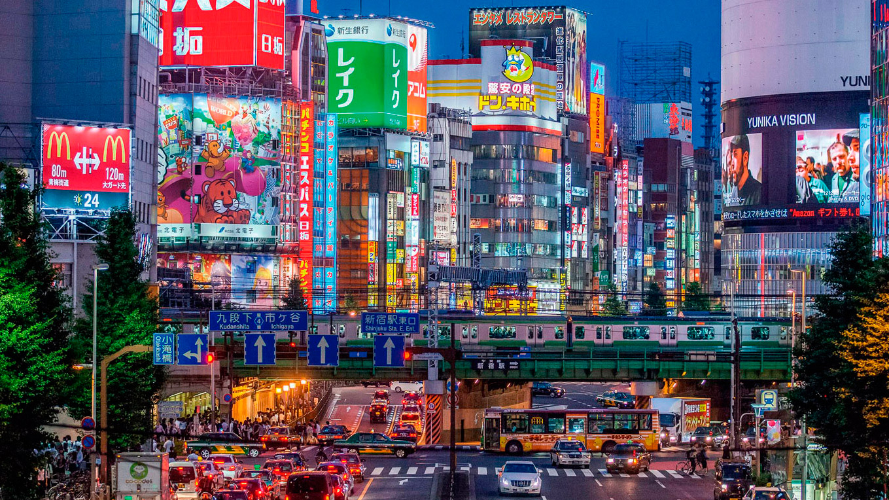
Shinjuku és al costat de Shibuya el barri més cosmopolita i viu de Tòquio. Els seus carrers són la viva imatge de la modernitat que tots tenim present en pensar a Tòquio. Les botigues d'electrònica de Shinjuku intenten fer ombra a les de Akihabara, però els preus de les grans superfícies són més propers als preus europeus. L'estació de Shinjuku és actualment la més transitada de Tòquio. Cada dia passen per les seves andanes més de tres milions i mig de persones. Shinjuku té 3 zones característiques.
Zona oest
Zona est
És la zona més animada de Shinjuku. En aquesta àrea hi ha tot tipus de bars i restaurants, sales de màquines i karaokes.
Zona sur
Encara que és una bona zona per fer compres, però si no tens molt de temps, Shinjuku Southern Terraces és un lloc menys interessant que els anteriors.
Shinjuku Central Park

El parc de Shinjuku es troba en la part posterior de l'Ajuntament i pot servir per respirar una mica d'aire pur. És un lloc molt freqüentat pels treballadors de la zona a l'hora de menjar.
Sorprèn la quantitat de gent sense llar que viu en aquest parc a menys de 100 metres de l'ostentós gratacel de l'Ajuntament i del luxós hotel Park Hyatt Tòquio.
Shibuya
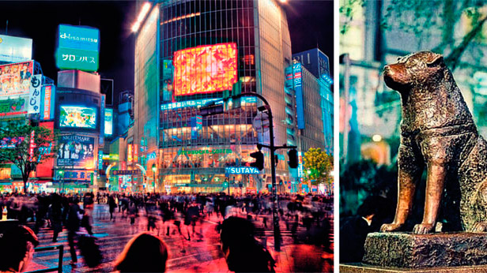
És un altre dels barris més importants de Japó. En ell destaquen els seus grans centres comercials i la gran quantitat de botigues de moda. Shibuya, sense dubtes és un barri més actiu durant la nit
Per conèixer la zona és millor anar de nit, els carrers ple de llums, i la quantitat de gent que va a aquestes hores de la nit, defineix aquest barri. El carrer més famós és Center Gai.
A més, sortint de l'estació de Shibuya, hi ha un encreuament denominat "Hachiko" arribareu a la plaça on es troba l'estàtua del gos Hachiko. L'estàtua va ser aixecada en presència de Hachiko en 1934 per commemorar la seva fidelitat.
Harajuku
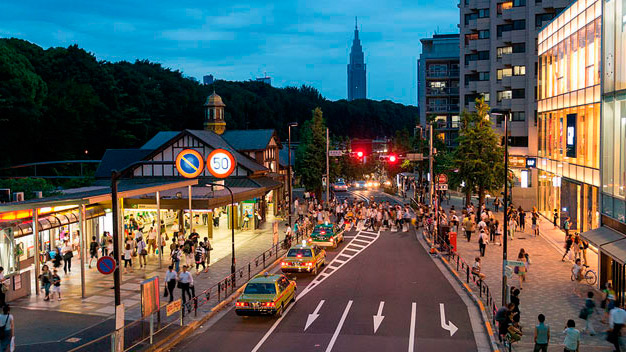
Harajuku és el barri de la moda que hi ha en Tòquio. Ja que també hi ha aquí moltes botigues de roba peculiar i no peculiar. I és el lloc on es reuneixen tots els amants de l'anime, manga, i videojocs. On trobar-te a gent disfressada (fent Cosplay) dels seus personatges favorits.
Omotesando
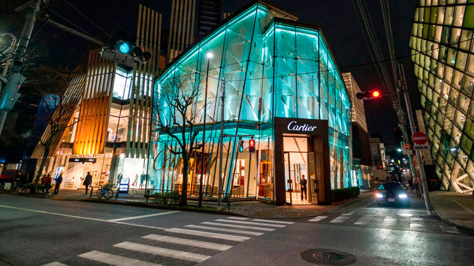
És un carrer de compres més luxós. Si t'agrada la moda però no tens un pressupost molt elevat o vols comprar molts articles a la vegada i més autèntics, només mirant pels carrers perpendiculars i paral·leles de Omotesando, pots trobar alguna ganga. Omotesando és una avinguda visible res més sortir de l'estació de JR Harajuku.
Takeshita Dori
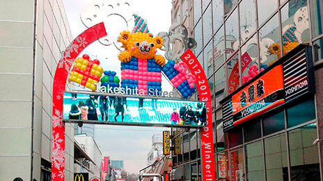
Com si fos la contrapart de Omotesando, aquesta és més pintoresca. En les seves botigues podreu trobar els models més moderns o estrafolaris, deixem la qualificació al vostre gust.
Takeshita Dori és un carrer paral·lel a Omotesando situada uns 250 metres al nord. La millor forma d'arribar és sortint de l'estació de JR Harajuku i caminant paral·lels a les vies en adreça nord.
Asakusa

Asakusa és un dels barris amb més història del centre de Tòquio. Els temples antics japonesos adornen aquest barri.
Sensoji és el temple més antic i important de Tòquio i constitueix un motiu suficient per visitar Asakusa.
Per arribar al temple cal recórrer el corregut del carrer comercial Nakamise Dori i travessar la porta de Kaminarimon. El més cridaner d'aquesta porta és l'enorme llanterna de 4 metres d'altura que penja d'ella.
El temple està format per la sala principal, reconstruïda després de la Segona Guerra Mundial, i per una pagoda de 55 metres d'altura.
Una altra visita que val la pena en Asakusa són les botigues que es troben en Kappabashi Dogugai, i aquestes botigues subministren als restaurants les rèpliques dels plats que aquests exposen en les seves vitrines, un estrany regal sorprenentment sol·licitat.
Per arribar a aquest carrer cal abandonar el temple per la part esquerra dels seus jardins i caminar uns 300 metres creuant la via principal. Val la pena fer un passeig per Asakusa, per descobrir més sobre el Japó antic.
Ginza
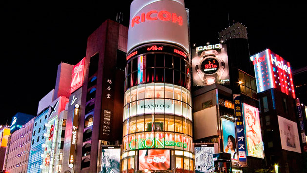
Si bé en els últims anys ha anat perdent punts respecte a Shinjuku i Shibuya, Ginza ha estat durant el segle XX la referència del Tòquio més modern i actual. Hi ha diversos punts d'interès a la zona de Ginza que no hauríeu de passar per alt. Per trobar cada punt el millor és agafar un mapa zonal en la mateixa estació:
Edifici de Sony
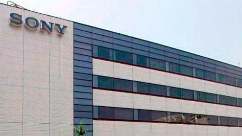
El "Sony Building" de Ginza ha estat durant dècades un estàndard de la tecnologia japonesa. En el seu interior trobareu un showroom on podreu veure els últims avanços de la marca.
Apple Store
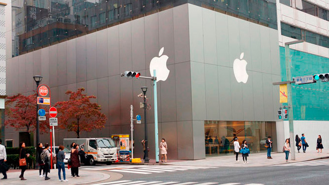
Encara que el disseny exterior de la botigues d'Apple és sorprenent, a l'interior no trobareu gens que no conegueu de la signatura nord-americana. Les persones amb esperit informàtic trobaran una raó de pes per visitar la botigues: connexió gratuïta a internet.
Teatre Kabuki-Za
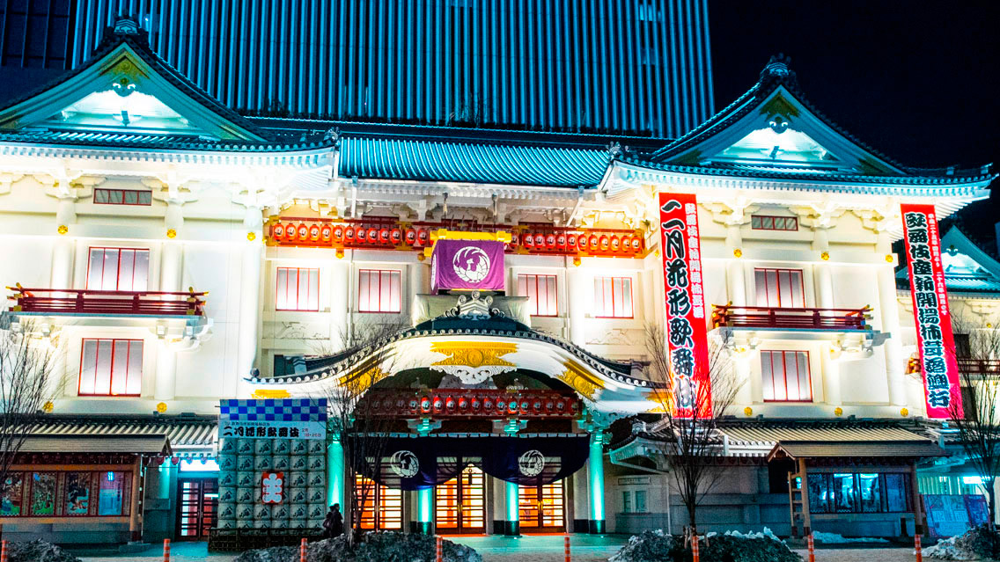
Interior
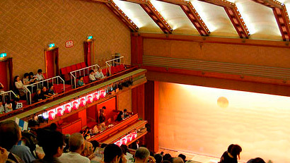
Obert en 1889 i amb una preciosa arquitectura, el Teatre Kabuki-Za representa funcions diàries entre 3 i 5 hores de durada. Si voleu gaudir d'una d'aquestes vetllades, podreu disposar d'una audioguia en anglès.
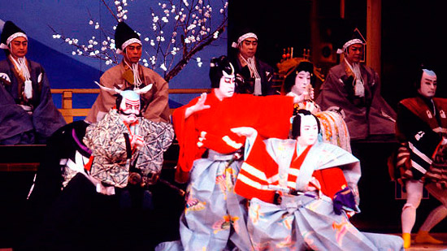Ginza Wako
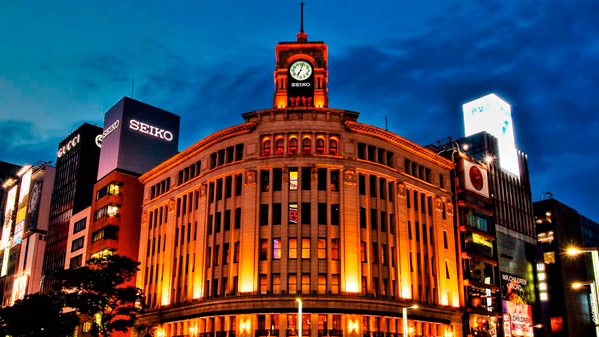
Amb el seu enorme rellotge i un marcat tall occidental, l'edifici Wako no pot passar desapercebut. Va ser construït en 1932 i està situat en l'encreuament entre Chuo i Harumi Dori, les dues avingudes principals de Ginza.
Akihabara
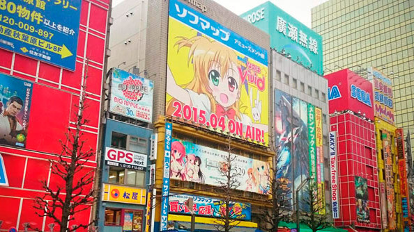
Akihabara és el millor barri de Tòquio per comprar les últimes novetats en càmeres digitals, videojocs, reproductors de música, anime, manga, i més.
Els seus centres comercials i grans botigues són de les més vistoses. En aquest lloc hi ha moltes botigues especialitzades només en videojocs, tot tipus de figures, disfresses, i coses relacionades en el món de l'anime i manga. Però no us quedeu només als centres comercials. Si recorreu els carrers del barri i us atreviu a rebuscar entre les botigues més recòndites, és possible que trobeu la ganga que busqueu.
Chuo dori
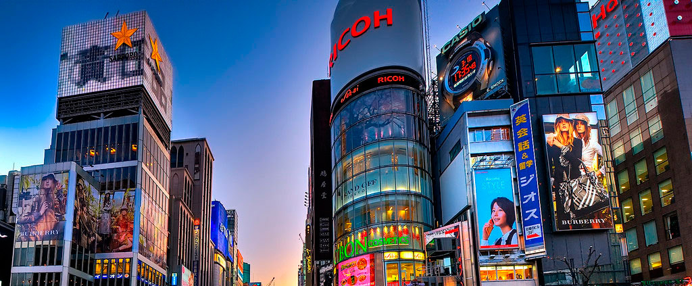
És el carrer més important de Akihabara, només entrar a l'estació Akihabara Sur, i l'estació Suehirocho Nort, estan les botigues principals. Però la millor forma d'arribar a Akihabara és anant a la sortida "Electric Town" en la estaciò Akihabara. Alguna cosa que sorprèn el barri és la diversitat de productes que es venen en les botigues. Com més us endinseu en carrers secundaris i per llocs menys transitats, més probabilitats tindreu de trobar botigues carregades de díodes, transistors i peces similars.
Però el tema principal i més conegut per aquest barri és ni més ni menys que la cultura manga: còmics, figures o disfresses, són els típics productes que pots trobar aquí.
Igual que Harajuku, Akihabara es converteix, sobretot els caps de setmana, en un curiós lloc on podreu veure a molts Otakus, també anomenats akiba-kei, les persones envaeixen les voreres disfressats dels seus personatges favorits.
Maid Cafe
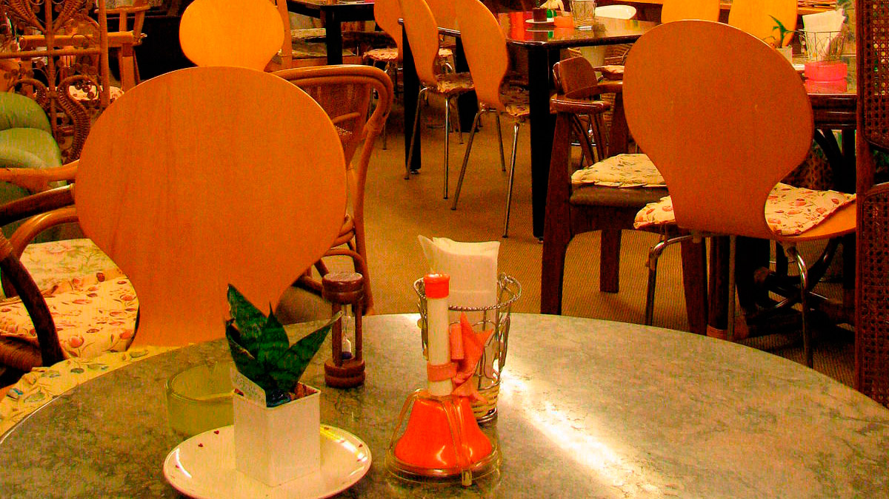
Però si vas a Japó i t'agrada aquest tema, no pots deixar passar anar a un dels famosos Maid Cafe. Que són bars especialment enfocats al públic masculí. Les belles donzelles us tractaran amb molta delicadesa i us faran sentir com si fóssiu nobles d'una altra època.
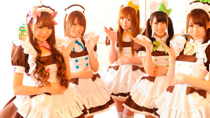Els Maid Cafe també solen oferir estranys serveis addicionals com que una "sirventa" us llegeixi un conte, jugui amb vosaltres a la consola o que t'hi doni una bufetada. En Japó hi ha de tot.
Roppongi
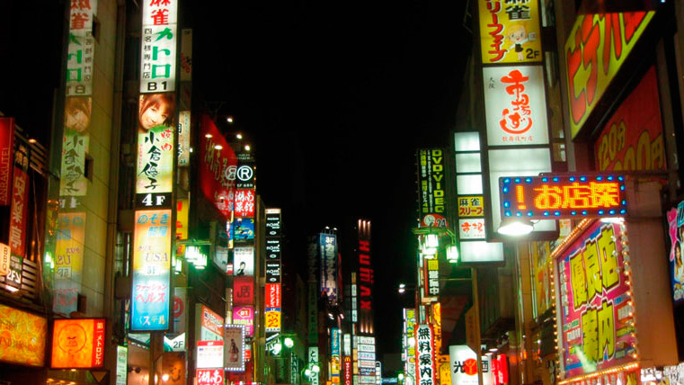
Roppongi és la zona més marxosa i animada de Tòquio. L'ambient, clarament internacional, envaeix els seus bars i discoteques, especialment els caps de setmana.
Es diu que l'encreuament de Roppongi és la intersecció entre Tòquio i el món i és que, a més de ser la zona preferida per sortir, Roppongi també és la zona triada per viure per la major part dels estrangers expatriats.
En Roppongi es barregen restaurants occidentals com Hard Rock Cafe o Toni Romes al costat de pubs "típics japonesos" com a Gas Panic o Motown.
Encara que no té la concentració de gratacel de Shinjuku, Roppongi és vanaglòria de tenir tres dels edificis més alts de Tòquio: la Torre de Tòquio, que mesura 333 metres, la Torre Mid Town, que mesura 248 metres, i la Torre Mori, que mesura 238 metres. Si pases per Roppongi, has d'anar a dos llocs que valen la pena la visita a aquest bari.
Roppongi Hills
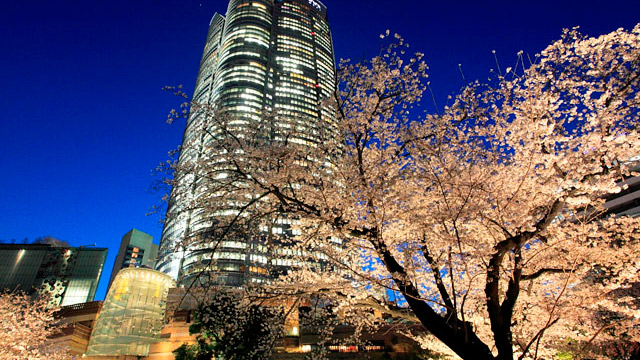
Roppongi Hills és un complex d'edificis que va ser creat l'any 2003 amb el lema d'"una ciutat dins d'una altra ciutat". Té com 200 botigues, restaurants, cinemes, oficines, habitatges, hotels i una galeria d'art amb el millor mirador de Tòquio.
Tokyo Midtown
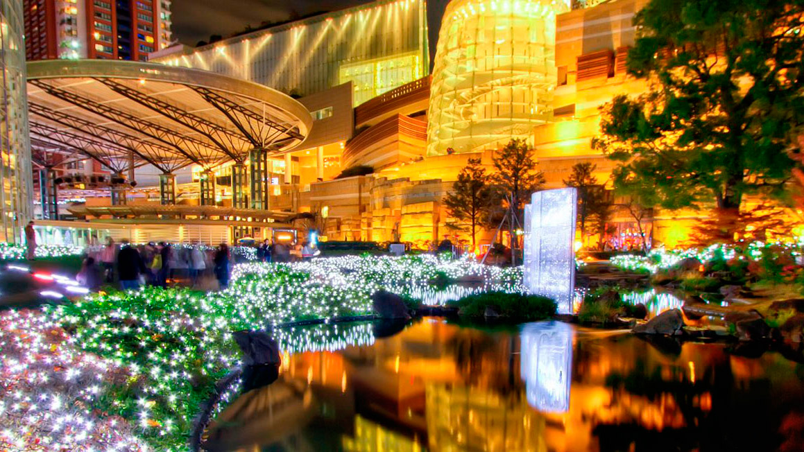
És més o menys similar a Roppongi Hills però aquest va ser construït quatre anys després, Tòquio Midtown és un complex arquitectònic compost per diverses torres que inclouen oficines, restaurants, un hotel i més de 100 botigues de moda. L'edifici més important és la Torre Mid Town, amb 248 metres d'altura.
Odaiba

Odaiba és una illa artificial situada en la badia de Tòquio. La zona més turística de Odaiba és la seva part oest. En aquesta zona hi ha diversos centres comercials, restaurants i terrasses on tenen unes magnífiques vistes de la badia de Tòquio.
En aquesta zona també es troba una rèplica de l'Estàtua de la Llibertat, a més de la platja de Tòquio, un lloc ideal per romàntics, ja que pots gaudir d'unes bones vistes de la posta de sol amb el Pont Rainbow i la megalòpolis de fons.
Però tambè Odaiba és el lloc dels museus, entre els quals destaquen el Museu Nacional de les Ciències i Innovació (Miraikan) La Mega Web, una exposició de Toyota on podreu veure cotxes de totes les èpoques. Altres visites no menys interessants són la sínia Ferris Wheel, de 115 metres d'altura, i l'edifici de la cadena de televisió Fuji, al que podeu pujar per tenir unes vistes excepcionals.
I si vols gaudir gaudir d'una experiència autènticament japonesa, en Odaiba també es pot visitar el bany termal Ooedo-Onsen-Monogatari. Els banys termals és una de les coses típiques que fan els Japonesos a part de divertir-se amb el Karaoke. Per recuperar-se i tranquil·litzar-se, els banys termals són una bona opció per passar el temps, ja que alleuja els dolors corporals.
Aquest Onsen (bany termal) és el major de Tòquio i consta de diversos banys interiors i exteriors amb aigües termals extradides des de 1.400 metres sota terra. Perquè ningú s'avorreixi, el recinte compta amb restaurants, bars, sales de massatges i altres activitats.
Altres punts d'interés
Mercat de Tsukiji
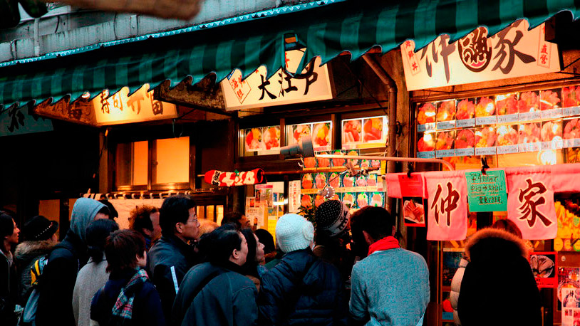
Si t'agrada Japó, has de conèixer el mercat de peix més gran del món. Amb el pas del temps, s'ha anat convertint en una de les visites més especials de Tòquio. En Tsukiji es venen més de 450 espècies diferents de peix i marisc. I cada dia es mouen en aquest mercat gairebé 3.000 tones de peix, gairebé el 90% del total dels tres grans mercats de Tòquio.
Però si hi ha alguna cosa al Mercat de Tsukiji que crida l'atenció dels viatgers de tot el món, això és la subhasta de tonyines. Cada dia, entre les 5:00 i les 6:15 del matí venen tones de tonyines recentment pescades (i congelats).
Altres parcs
Parc Yoyogi
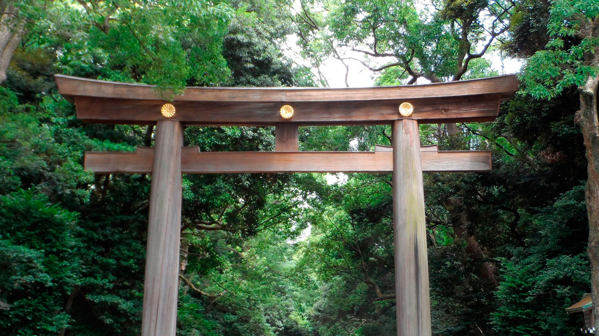
El Parc Yoyogi és el parc més animat de Tòquio i el més gran. Yoyogi és un lloc ideal per veure la vida dels japonesos més enllà dels centres comercials. Hi ha famílies, parelles i grups d'amics menjant, jugant al beisbol, passejant al seu gos o fins i tot ballant, sobretot els diumenges.
El Parc Yoyogi és el lloc triat pels Rockabillys per ballar i seduir als centenars de visitants que observen atònits cada moviment. Caçadores de cuir, botes desgastades i arquitectònics tupès defineixen a aquesta tribu urbana. Els Rockabillys se solen situar els diumenges en l'entrada del parc més propera al pont Jingu-bashi.
Santuari Meiji
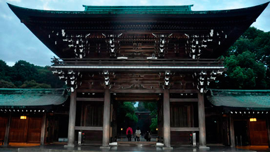
En aquest parc també està el Santuari Meiji, un dels centres religiosos més importants de Tòquio. En dies festius com a Any Nou s'acosten a aquest santuari més d'un milió de persones. També és la seu de nombroses festivitats com el Dia de la Majoria d'Edat. El santuari està envoltat d'un bosc de 120.000 arbres de diferents espècies, al costat del parc Yoyogi, en ple centre de Tòquio, i és un lloc de descans i relaxació ideal, malgrat estar en una de les zones més bullicioses de Tòquio.
Les entrades a temples, santuaris i castells solen costar entre 500 i 1.000 iens, mentre que les entrades a miradors o museus poden costar fins a 2.000 iens, depenent del cas, per la qual cosa si aneu amb pressupost molt ajustat, us recomanem anotar aquells llocs que voleu visitar i revisar els preus.
Per exemple, l'entrada al temple Kiyomizudera costa 400 iens, mentre que l'entrada al castell d'Himeji costa 1.000 iens. D'altra banda, pujar a la torre Tòquio Skytree costa 2.060 iens (1.030 iens més si volem pujar al segon mirador).
L'entrada a aquest santuari està marcada per diversos Torii (arcs) enormes de fusta i coure, que porten la figura d'un crisantem, la flor que apareix en el blasó de la família imperial.
El santuari consta de dos espais diferenciats: la zona interior, on trobem els edificis del santuari i el Homotsuden, el museu del Tresor, que exposa diverses curiositats de l'emperador i l'emperadriu; i la zona exterior, on trobem una galeria plena de grans murals que il·lustren la via de l'emperador.
En l'extrem sud del santuari, trobem el Jardí Interior, una visita molt recomanable especialment al juny quan floreixen els lliris.
El santuari de Meiji va ser reconstruït en 1958, just després de la Segona Guerra Mundial, després d'haver estat destruït per les bombes que van assotar la capital nipona durant la guerra.
El santuari de Meiji és una visita obligada per a qualsevol turista que trepitgi la capital nipona. Gaudir de la seva arquitectura, relaxar-se passejant per les senderes del bosc, passar per sota dels seus grans arcs de fusta, rentar-nos les mans en la font d'ablució Temizuya.
Temizuya
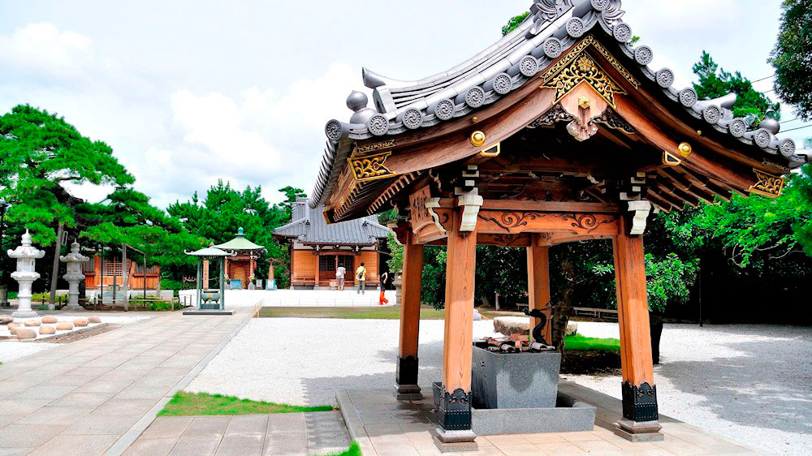
És una gran pila de pedra de la qual surten un o diversos dolls d'aigua i en la qual hi ha disponibles petits cassons, en el qual els visitants es renten les mans i la boca per purificar-se abans de prosseguir amb la seva visita a un santuari.
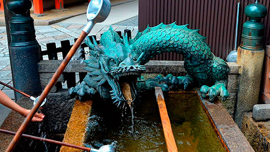Parc Ueno
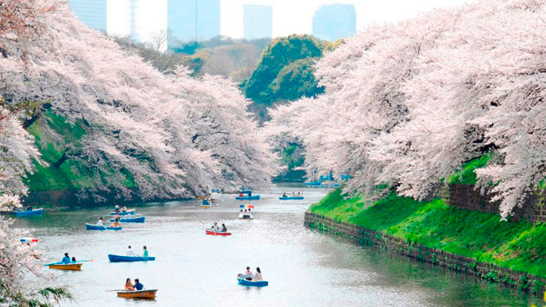
Ueno va ser el primer parc de Tòquio i és un dels principals focus culturals de la ciutat. Durant la primavera, les seves més de 1.000 cirerers li donen un color únic.
Al parc es concentren el Museu Nacional de Tòquio, el Museu Oriental, el Museu Nacional de Ciències, el Museu Shitamachi, el Museu Nacional d'Art Occidental i la Galeria Metropolitana d'Art de Tòquio.
En finalitzar de recórrer el parc, no abandoneu la zona sense abans fer una passejada per Ameyoko, els carrers comercials que surten des de l'estació. I val la pena passar per aquí, ja que té un ambient únic.
Santuari Toshgou
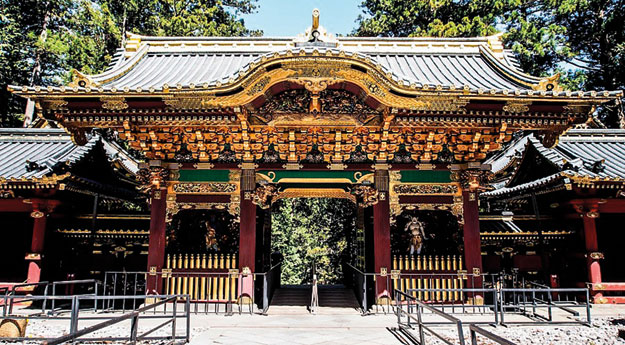
Però deixant de costat els museus, el lloc més visitat del parc és el Santuari Toshogu. Aquest santuari es calcula que es va construir en 1627 i és un dels principals edificis que es conserven des dels temps d'Edo. En aquest lloc els japonesos escriuen els seus desitjos en una peça de fusta que té una corda per penjar-la, i el pengen pel santuari, ja que pensen que així el seu desig pot complir-se de veritat.
El Santuari de Toshogu, considerat com a tresor nacional del país, guarda en el seu interior una escultura dels 3 Savis Micos o Místics que ens ensenyen molt més del que sembla amb només mirar-los.
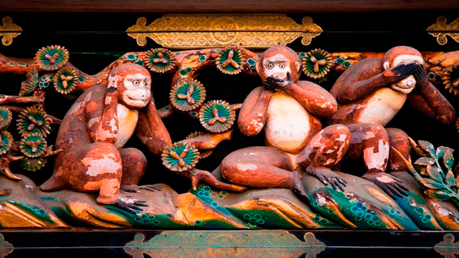L'escultura representa al concepte de la negació. Tan sols s'ha d'analitzar una mica la imatge i podrem adonar-nos que implícitament aquests 3 micos ens estan dient: Mizaru ("No veig"), Kikazaru ("No sento"), i Iwazaru ("No parlo"). Però tenen dues interpretacions.
Negar la maldat.
Aquests tres micos, segons la tradició nipona volen dir-nos que hem de negar-nos a escoltar, veure i dir maldats. Sens dubte, una sàvia visió de la realitat perquè només d'aquesta manera podrem trobar la pau interior i la pau amb els altres.
No tenir por.
Una altra interpretació també coherent i que no hem de deixar de costat és el que aquests tres animals representen: l'evasió de la por absoluta. De quina manera? No veure, no escoltar, no dir. La cultura japonesa sempre és molt interessant.
A més, hi ha una gran celebració que es duu a terme aquí: "El Gran Festival Toshogu". Es tracta d'una enorme processó on podràs veure a persones disfressades de samurais, alguna cosa que sens dubte pot ser molt interessant de veure. Si vols assistir, has de visitar el lloc el 14 de maig, perquè és el dia de la celebració d'aquest festival.
I altres punts més interessants del parc és l'estàtua de Saigo Takamori, L'Últim Samurai, un personatge històric que va estar present durant tota la modernització de l'imperi de Meiji. Aquest personatge va ser la base per a la pel·lícula del mateix nom interpretada per Tom Cruise. Es pot trobar aquesta estàtua en l'entrada sud del parc. El més característic d'aquest parc zoològic és que va ser el primer a obrir a Japó.